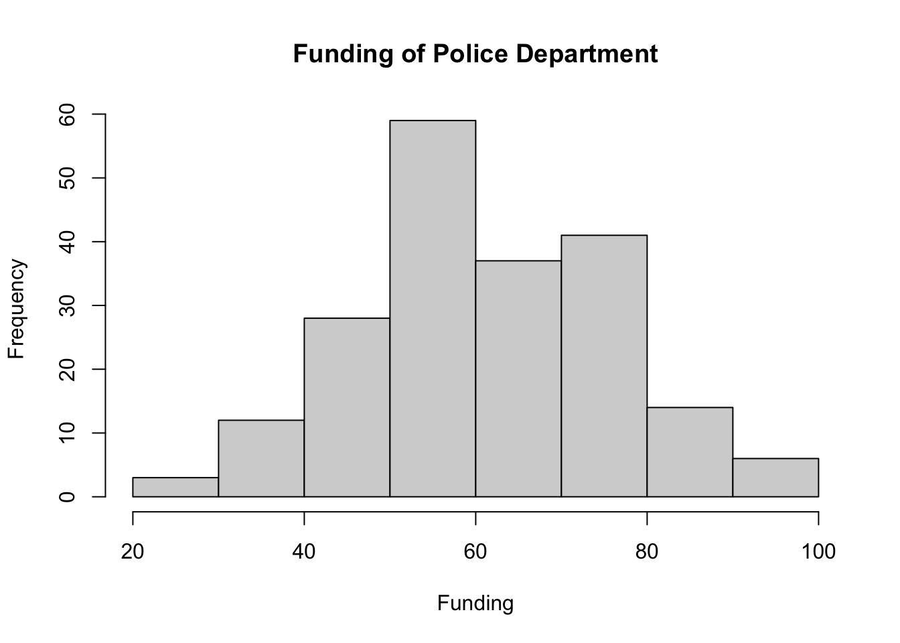
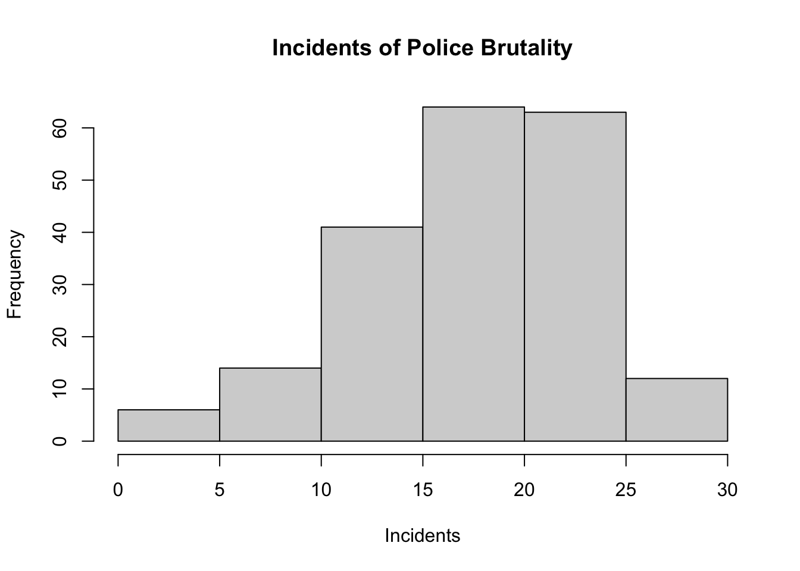
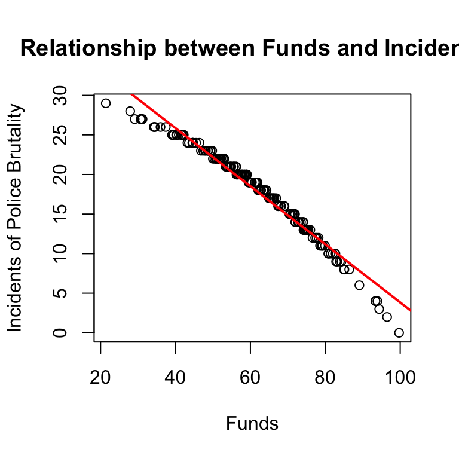
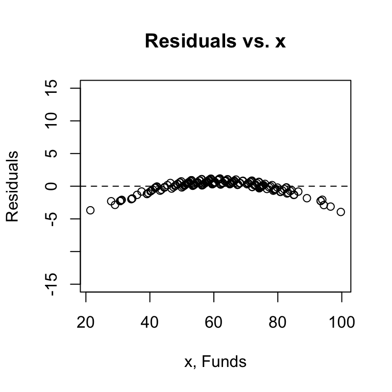
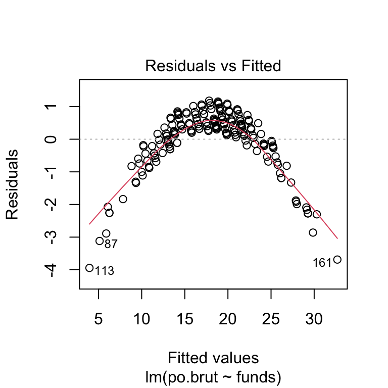

Exam 2
Sara Whitelaw
11/01/2021
Instructions
Create a folder in your computer (a good place would be under Crim 250, Exams).
Download the dataset from the Canvas website (sim.data.csv) onto that folder, and save your Exam 2.Rmd file in the same folder.
Data description: This dataset provides (simulated) data about 200 police departments in one year. It contains information about the funding received by the department as well as incidents of police brutality. Suppose this dataset (sim.data.csv) was collected by researchers to answer this question: “Does having more funding in a police department lead to fewer incidents of police brutality?”
Codebook:
- funds: How much funding the police department received in that year in millions of dollars.
- po.brut: How many incidents of police brutality were reported by the department that year.
- po.dept.code: Police department code
Problem 1: EDA (10 points)
Describe the dataset and variables. Perform exploratory data analysis for the two variables of interest: funds and po.brut.
dat.sim <- read.csv(file = 'sim.data.csv')
names(dat.sim)## [1] "po.dept.code" "funds" "po.brut"summary(dat.sim$funds)## Min. 1st Qu. Median Mean 3rd Qu. Max.
## 21.40 51.67 59.75 61.04 72.17 99.70summary(dat.sim$po.brut)## Min. 1st Qu. Median Mean 3rd Qu. Max.
## 0.00 14.00 19.00 18.14 22.00 29.00hist(dat.sim$funds, main="Funding of Police Department", xlab="Funding", ylab="Frequency")
hist(dat.sim$po.brut, main="Incidents of Police Brutality", xlab="Incidents", ylab="Frequency")
There are three observed variables in the dataset: funds, po.brut, and po.dept.code. Funds is in reference to how much funding the police department received in that year in millions of dollars. Po.brut is how many incidents of police brutality were reported by the department that year. Po.dept.code is police deparment code. The mean for funds is 61.04 while po.brut is 18.14. The minimum for funds is 21.40, max is 99.70. THe minimum for po.brut is 0 and the max is 29.
Problem 2: Linear regression (30 points)
- Perform a simple linear regression to answer the question of interest. To do this, name your linear model “reg.output” and write the summary of the regression by using “summary(reg.output)”.
# Remember to remove eval=FALSE!!
#dat.sim$funds.c = scale(dat.sim$funds, center=TRUE, scale=FALSE)
reg.output <- lm(formula = po.brut ~ funds, data = dat.sim)
summary(reg.output)##
## Call:
## lm(formula = po.brut ~ funds, data = dat.sim)
##
## Residuals:
## Min 1Q Median 3Q Max
## -3.9433 -0.2233 0.2544 0.5952 1.1803
##
## Coefficients:
## Estimate Std. Error t value Pr(>|t|)
## (Intercept) 40.543069 0.282503 143.51 <2e-16 ***
## funds -0.367099 0.004496 -81.64 <2e-16 ***
## ---
## Signif. codes: 0 '***' 0.001 '**' 0.01 '*' 0.05 '.' 0.1 ' ' 1
##
## Residual standard error: 0.9464 on 198 degrees of freedom
## Multiple R-squared: 0.9712, Adjusted R-squared: 0.971
## F-statistic: 6666 on 1 and 198 DF, p-value: < 2.2e-16- Report the estimated coefficient, standard error, and p-value of the slope. Is the relationship between funds and incidents statistically significant? Explain.
The estimated coefficient is 40.54 while the standard error is 0.9464 and the p value of the slope is 2e-16. The relationship between funds and incidents is statistically significant because the p value is less than the alpha value of 0.05 meaning we reject the null hypothesis
- Draw a scatterplot of po.brut (y-axis) and funds (x-axis). Right below your plot command, use abline to draw the fitted regression line, like this:
# Remember to remove eval=FALSE!!
plot(dat.sim$funds, dat.sim$po.brut, main="Relationship between Funds and Incidents", xlab="Funds", ylab="Incidents of Police Brutality")
abline(reg.output, col = "red", lwd=2)
plot(dat.sim$funds, reg.output$residuals, ylim=c(-15,15), main="Residuals vs. x", xlab="x, Funds", ylab="Residuals")
abline(h = 0, lty="dashed")
plot(reg.output, which=1)
plot(reg.output, which=3)
plot(reg.output, which=2) Does the line look like a good fit? Why or why not?
Does the line look like a good fit? Why or why not?
Yes, the line is a good fit because it goes through most of the data points
- Are the four assumptions of linear regression satisfied? To answer this, draw the relevant plots. (Write a maximum of one sentence per assumption.) If not, what might you try to do to improve this (if you had more time)?
The linearity assumption could be met because the scatterplot of x and y looks generally straight but shows some tailing at the ends. The independence assumption is not met because the residuals vs. x plot shows a curve. The equal variance/homoscedacity assumption is also not met because the the scale location plot shows a nonlinear trend. The normal population assumption is also not met because the normal qq plot is incredibly heavy tailed. The assumptions not being met shows that the model used is not a good fit for the data, this means that we could use a different model. It could also be that the data itself could be ‘bad data’ in that there is no independence between x and y.
- Answer the question of interest based on your analysis.
We cannot assume that more funding in a police department reduces incidents of police brutality because all 4 of the assumptions are not met. Further, correlation does not impact causation and a true experiment would need to be run in order to determine such a relationship.
Problem 3: Data ethics (10 points)
Describe the dataset. Considering our lecture on data ethics, what concerns do you have about the dataset? Once you perform your analysis to answer the question of interest using this dataset, what concerns might you have about the results?
The dataset provides data about 200 police departments in one year. It reports about the funding received by the department as well as police brutality incidents. This dataset is concerning because it is likely that there was underreporting in terms of the incidents of police brutality since police departments would not want to reveal the true extent of brutality incidents. The results of the regression performed on the dataset is concerning because the only assumption that was barely met was the linearity assumption. This means that the results performed from the tests are not accurate and cannot be used to generate a hypothesis whether there is an impact of funding on brutality incidents.